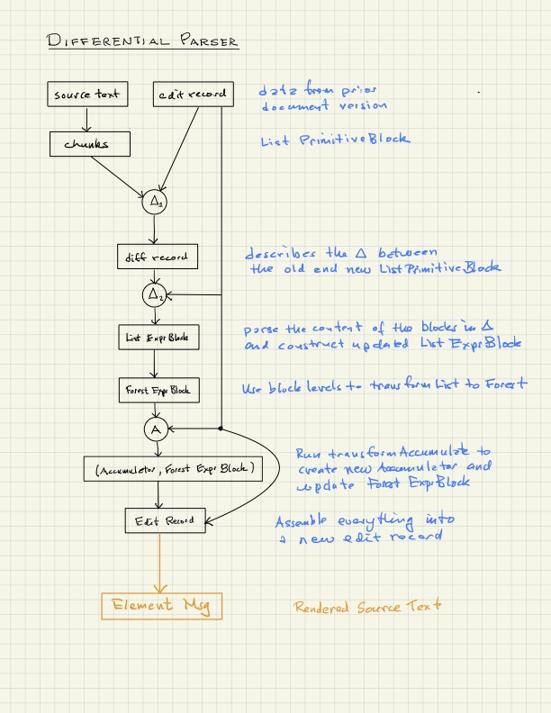

Overview
The Scripta compiler transforms text into Element Msg
through a series of stages, as illustrated in the
following figure.
-
Break the source text into chunks, namely a list of so-called primitive blocks.
-
Ignoring for the moment the possibility of diff records and differential compilation, parse the content of the primitive blocks, transforming string data into lists of
Expr(see Intro, section "Internal Language") -
Transform the list of expression blocks into a forest of expression blocks using the indentation structure or, in the case of microLaTeX, the level structure.
-
Walk through the forest of expression blocks, accumulating data on section numbers, the table of contents, cross-references etc, while simultaneously updating the forest of expression blocks where indicated.
-
Use this data to produce a so-called
EditRecord, a data structure containing all the information needed to render the original source text intoElement MarkupMsg, an Elm representation of Html. -
Use the Edit Record to produce the final rendered text.
Flowchart

Error Recovery
Error recovery occurs in two places
-
Formation of a list of primitive blocks from the source text, which is just a long string.
-
Parsing the content of primitive blocks
Language definition
The strategy is basically the same in both cases. Let us describe (2) for the case of pure L0.
For this we need a more precise definition of the internal language to be parsed. An element of pure L0 text is
-
a span of pure text, e.g. "roses are red"
-
a function element, e.g. "[italic roses are red]", consisting of a function name (italic here) and a body, which is a sequence consisting of pure text spans and function elements.
-
a sequence of the above.
Function elements can be nested, as in "[italic roses [bold are] red]". In this example, "roses" and "red" are italicized, while "are" bold italic. Text like "He said that [italic roses [bold are] red]" are also legitimate L0 text.
Tokenization
Tokens for pure L0 are of the type listed below.
The constructors LB and RB refer to left and
right brackets. Meta is a meta data field that
records the location of the part of the source text
corresponding to the token. S stands for String
and W stands for white space.
type Token
= LB Meta
| RB Meta
| S String Meta
As an example, the text "[italic roses]" tokenizes as
LB, S "italic", S " roses", RB
where we have ignored the Meta component. You can verify this as follows:
$ elm repl
> import L0.Parser.Token exposing(..)
> run "[italic roses]" |> List.reverse
The second token in full form is
S "italic" { begin = 1, end = 6, index = 1 }
The index refers to the index of the token in the token list. This will be used in error recovery.